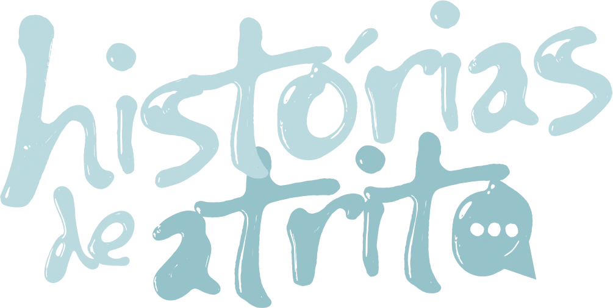

Conte a sua
Qual foi a sua maior história de atrito na hora do sexo?
Aquela vez em que faltou deslize e sobrou história. A transa que travou, o momento que doeu, a saída constrangedora, a risada depois. Pode contar aqui.
História recebida.
Obrigado por contar. Ela entrou anônima, do jeito que você escreveu.
O que já contaram
Histórias de atrito
Nenhuma história por aqui ainda. A primeira pode ser a sua.